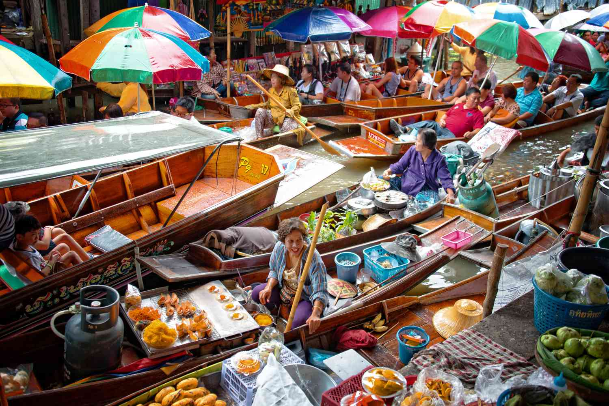
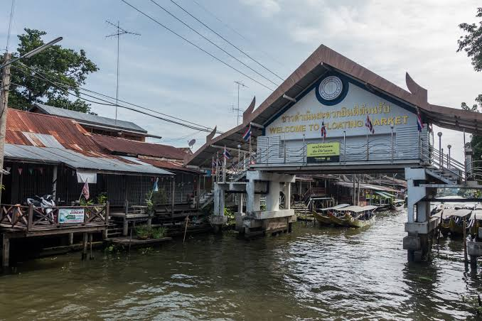
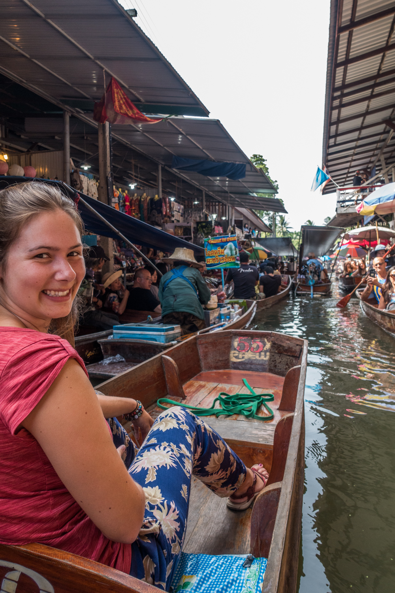
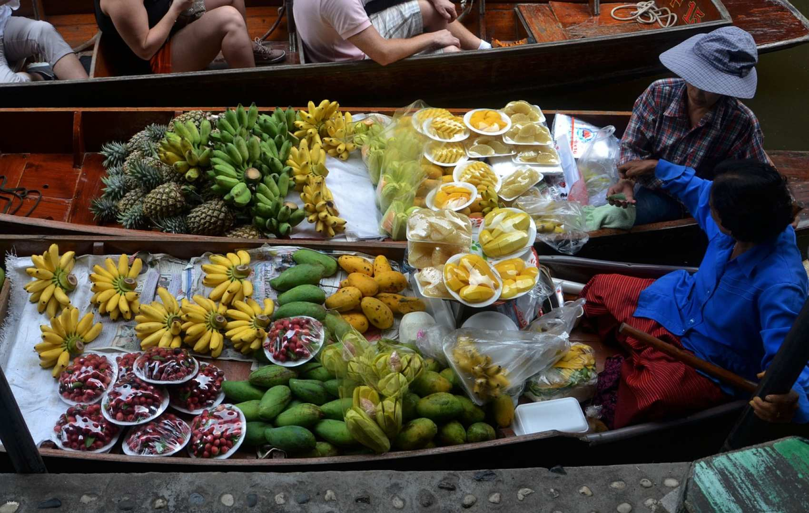
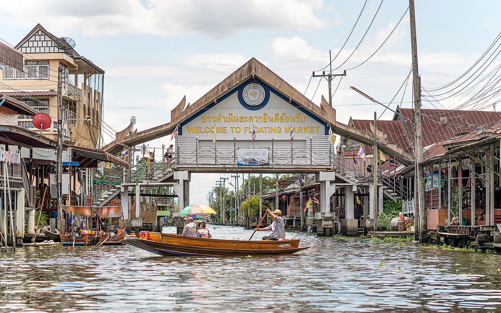

Плавучий рынок Дамноен Садуак

Damnoen Saduak Floating Market — один из самых известных плавучих рынков Таиланда. Он находится в провинции Ратчабури, примерно в 80–100 километрах к юго-западу от Бангкока.
В отличие от обычного рынка, здесь торговля происходит прямо на воде. По узким каналам передвигаются деревянные лодки, загруженные фруктами, овощами, готовой едой и сувенирами, а продавцы предлагают свои товары туристам прямо с лодок. Дамноен Садуак особенно известен своей утренней атмосферой. Лучше всего приезжать рано, когда каналы заполнены лодками, а рынок ещё находится в самом разгаре.
История рынка
История Дамноен Садуак тесно связана с каналом Damnoen Saduak, который был построен во времена правления короля Рамы IV.
Канал создавался как важный водный путь, соединявший различные районы центрального Таиланда. Благодаря системе каналов местные жители могли перевозить товары, общаться между деревнями и вести торговлю по воде. Со временем торговля на воде превратилась в характерную часть жизни региона, а Дамноен Садуак стал одним из наиболее известных плавучих рынков страны.

Как выглядит рынок
Основная особенность рынка — многочисленные узкие каналы, по которым постоянно движутся лодки. На каждой лодке может находиться свой продавец со своим ассортиментом. На воде можно увидеть лодки с корзинами фруктов, овощами, кокосами, цветами и различными готовыми блюдами. Вдоль каналов также расположены небольшие магазины и торговые точки.

Из-за большого количества лодок движение на некоторых участках канала становится очень плотным. Именно эта смесь торговли, лодок, криков продавцов и туристов создаёт узнаваемую атмосферу Дамноен Садуак.
Прогулка на лодке
Главный способ познакомиться с рынком — отправиться на лодке по каналам. Это позволяет увидеть рынок не только с берега, но и непосредственно изнутри.

Во время поездки лодка проходит мимо торговых точек и других лодок, а продавцы могут предлагать пассажирам фрукты, еду и сувениры. Стоимость поездки зависит от типа лодки, продолжительности маршрута и места посадки. По данным Tourism Authority of Thailand, ориентировочная стоимость аренды лодки для 2–4 человек может начинаться примерно от 500 бат за 30 минут.
Что попробовать
Тайские фрукты
Одно из главных украшений рынка — свежие тропические фрукты. Здесь можно встретить манго, кокосы, бананы, помело и другие фрукты, выращиваемые в центральном Таиланде.

Лодочная еда
Прямо с лодок продаются различные блюда тайской кухни. Одним из характерных вариантов являются boat noodles — небольшие порции лапши, которые традиционно готовятся и продаются возле каналов. Также можно встретить тайские сладости, жареные закуски, кокосовые десерты и свежеприготовленные блюда.
Сувениры и покупки
Помимо продуктов, на рынке продаются многочисленные сувениры. В магазинах и небольших торговых точках можно найти одежду, аксессуары, изделия ручной работы, украшения и традиционные тайские товары.
При покупке сувениров стоит сравнить цены в нескольких местах. На туристическом рынке цены могут отличаться в зависимости от продавца, поэтому торг здесь является обычной частью процесса покупки.
Лучшее время для посещения
Дамноен Садуак лучше всего посещать рано утром. В это время рынок наиболее оживлённый, а температура воздуха ещё относительно комфортная. Tourism Authority of Thailand рекомендует приехать примерно к 9:00 утра. Многие туристические поездки из Бангкока отправляются примерно в 6:30–7:00, чтобы посетители успели увидеть рынок в наиболее активное время.

Как добраться из Бангкока
Экскурсия
Для туристов одним из самых удобных вариантов является организованная экскурсия из Бангкока. Обычно выезд происходит рано утром, после чего туристов привозят непосредственно в район рынка.
Многие экскурсии также объединяют Дамноен Садуак с другими местами провинции Ратчабури, например с кокосовой фермой или железнодорожным рынком Мэклонг.
Самостоятельно
До района рынка можно добраться на автомобиле, такси или междугороднем транспорте. Расстояние от центра Бангкока составляет примерно 80–100 километров, поэтому дорога обычно занимает около двух часов в зависимости от транспорта и пробок.